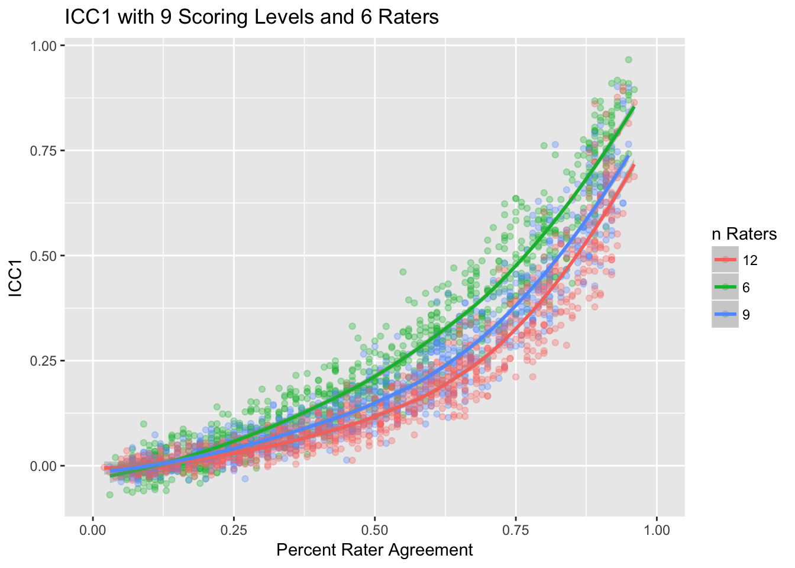

Relationship between intraclass Correlation (ICC) and Percent Agreement
Jason Bryer
2018-02-23
Inter-rater reliability (IRR) is a critical component of establishing the reliability of measures when more than one rater is necessary. There are numerous IRR statistics available to researchers including percent rater agreement, Cohen’s Kappa, and several types of intraclass correlations (ICC). Several methodologists suggest using ICC over percent rater agreement (Hallgren, 2012; Koo & Li, 2016; McGraw & Wong, 1996; Shrout & Fleiss, 1979). However, the literature provides little guidance on the interpretation of ICC results. This article explores the relationship between ICC and percent rater agreement using simulations. Results suggest that ICC and percent rater agreement are highly correlated (\(R^2 > 0.9\)) for most designs.
There are several designs for establishing IRR. We are generally concerned with the ratings of m subjects by k raters. The simplest design is \(m x 2\) where two raters score all m subjects. However, it common in education to have \(m > 2\) raters where each subject is scored by \(m = 2\) resulting in a sparce matrix. Shrout and Fleiss (1979) provide guidance on which of the six types of ICC to use depending on your design. The six types of ICC considered here are:
- ICC1 - Each subject is rated by 2 random raters.
- ICC2 - Each subject is rated by \(m > 2\) raters.
- ICC3 - Each subject is rated by a fixed set of k raters.
- ICC1k - 2-way ANOVA version of ICC1.
- ICC2k - 2-way ANOVA version of ICC2.
- ICC3k - 2-way ANOVA version of ICC3.
The IRRsim package implements several functions to facilitate simulating various scoring designs. To begin, let’s look at the simulateRatingMatrix function. This function will generate an nEvents by k matrix. For each row, two columns (which represent raters) are randomly selected and each cell of those cells will randomly have a value between 1 and nLevels. The likelihood of those two cell having the same value is defined by the agree parameter.
test <- simulateRatingMatrix(nLevels = 3, k = 6, agree = 0.6, nEvents = 10)
test
#> a b c d e f
#> 1 NA NA 1 NA 3 NA
#> 2 NA 1 1 NA NA NA
#> 3 NA 2 NA NA NA 1
#> 4 1 NA NA NA NA 1
#> 5 NA 3 NA NA NA 1
#> 6 NA 1 NA NA NA 1
#> 7 1 NA 2 NA NA NA
#> 8 1 1 NA NA NA NA
#> 9 NA NA NA 3 NA 3
#> 10 NA NA 1 NA 1 NAThe agreement function will calculate the percent rater agreement for the matrix.
agreement(test)
#> [1] 0.6For the remainder of the document, we wish to estimate ICC for 6, 9, and 12 raters under the conditions of 3, 5, and 9 scoring levels.
tests.3levels <- simulateICC(nRaters = c(6, 9, 12), nLevels = 3)
tests.5levels <- simulateICC(nRaters = c(6, 9, 12), nLevels = 5)
tests.9levels <- simulateICC(nRaters = c(6, 9, 12), nLevels = 9)The as.data.frame function provides the IRR statistics for each of the simulated samples.
test.3levels.df <- as.data.frame(tests.3levels)
dim(test.3levels.df)
#> [1] 2700 12
head(test.3levels.df)
#> nLevels nEvents k simAgreement agreement ICC1 ICC2
#> 1 3 100 6 0.1 0.11 -0.10727820 -0.11019280
#> 2 3 100 6 0.1 0.07 -0.09846000 -0.10158102
#> 3 3 100 6 0.1 0.12 -0.05946062 -0.06306218
#> 4 3 100 6 0.1 0.07 -0.10825415 -0.10772920
#> 5 3 100 6 0.1 0.07 -0.11158157 -0.11280540
#> 6 3 100 6 0.1 0.13 -0.06190261 -0.06190837
#> ICC3 ICC1k ICC2k ICC3k Cohen_Kappa
#> 1 -0.10954598 -1.3883881 -1.4723915 -1.4532818 -0.3347331
#> 2 -0.10097675 -1.1636004 -1.2385539 -1.2236732 -0.3924240
#> 3 -0.06271203 -0.5077064 -0.5526202 -0.5481502 -0.3225128
#> 4 -0.10784461 -1.4159221 -1.4010395 -1.4042970 -0.3899268
#> 5 -0.11251851 -1.5143663 -1.5524640 -1.5434376 -0.3851653
#> 6 -0.06190781 -0.5379039 -0.5379765 -0.5379694 -0.3098464The following three figures show ICC1 against percent rater agreement with 3, 5, and 9 score levels, respectively.
plot(tests.3levels, stat = 'ICC1')
plot(tests.5levels, stat = 'ICC1')
plot(tests.9levels, stat = 'ICC1')
The figure below show the relationship between percent rater agreement and intraclass correlation for the six types of ICC.
plot(tests.3levels)
The literature suggests that ICC be used over percent agreement. However, the figures above suggest there is a strong relationship between percent rater agreement and ICC. Below, we fit a quadratic model predicting ICC1 from percent agreement. In all three cases the resulting \(R^2\) is greater than .9!
tests.3levels.sum <- summary(tests.3levels, stat = 'ICC1', method = 'quadratic')
summary(tests.3levels.sum$model[[1]]) # k = 6 raters
#>
#> Call:
#> lm(formula = as.formula(paste0(stat, " ~ I(agreement^2) + agreement")),
#> data = test)
#>
#> Residuals:
#> Min 1Q Median 3Q Max
#> -0.138963 -0.024599 0.000255 0.023584 0.177872
#>
#> Coefficients:
#> Estimate Std. Error t value Pr(>|t|)
#> (Intercept) -0.062736 0.005254 -11.942 <2e-16 ***
#> I(agreement^2) 1.104572 0.023776 46.458 <2e-16 ***
#> agreement -0.231651 0.024266 -9.546 <2e-16 ***
#> ---
#> Signif. codes: 0 '***' 0.001 '**' 0.01 '*' 0.05 '.' 0.1 ' ' 1
#>
#> Residual standard error: 0.0426 on 897 degrees of freedom
#> Multiple R-squared: 0.9684, Adjusted R-squared: 0.9683
#> F-statistic: 1.374e+04 on 2 and 897 DF, p-value: < 2.2e-16
summary(tests.3levels.sum$model[[2]]) # k = 9 raters
#>
#> Call:
#> lm(formula = as.formula(paste0(stat, " ~ I(agreement^2) + agreement")),
#> data = test)
#>
#> Residuals:
#> Min 1Q Median 3Q Max
#> -0.150970 -0.026690 0.001841 0.023108 0.248758
#>
#> Coefficients:
#> Estimate Std. Error t value Pr(>|t|)
#> (Intercept) -0.002046 0.005554 -0.368 0.713
#> I(agreement^2) 1.165323 0.024650 47.275 <2e-16 ***
#> agreement -0.457918 0.025370 -18.050 <2e-16 ***
#> ---
#> Signif. codes: 0 '***' 0.001 '**' 0.01 '*' 0.05 '.' 0.1 ' ' 1
#>
#> Residual standard error: 0.04472 on 897 degrees of freedom
#> Multiple R-squared: 0.9518, Adjusted R-squared: 0.9517
#> F-statistic: 8861 on 2 and 897 DF, p-value: < 2.2e-16
summary(tests.3levels.sum$model[[3]]) # k = 12 raters
#>
#> Call:
#> lm(formula = as.formula(paste0(stat, " ~ I(agreement^2) + agreement")),
#> data = test)
#>
#> Residuals:
#> Min 1Q Median 3Q Max
#> -0.159152 -0.026720 0.003028 0.024621 0.271278
#>
#> Coefficients:
#> Estimate Std. Error t value Pr(>|t|)
#> (Intercept) 0.02459 0.00574 4.284 2.04e-05 ***
#> I(agreement^2) 1.14063 0.02549 44.747 < 2e-16 ***
#> agreement -0.53271 0.02625 -20.293 < 2e-16 ***
#> ---
#> Signif. codes: 0 '***' 0.001 '**' 0.01 '*' 0.05 '.' 0.1 ' ' 1
#>
#> Residual standard error: 0.04632 on 897 degrees of freedom
#> Multiple R-squared: 0.9343, Adjusted R-squared: 0.9342
#> F-statistic: 6380 on 2 and 897 DF, p-value: < 2.2e-16